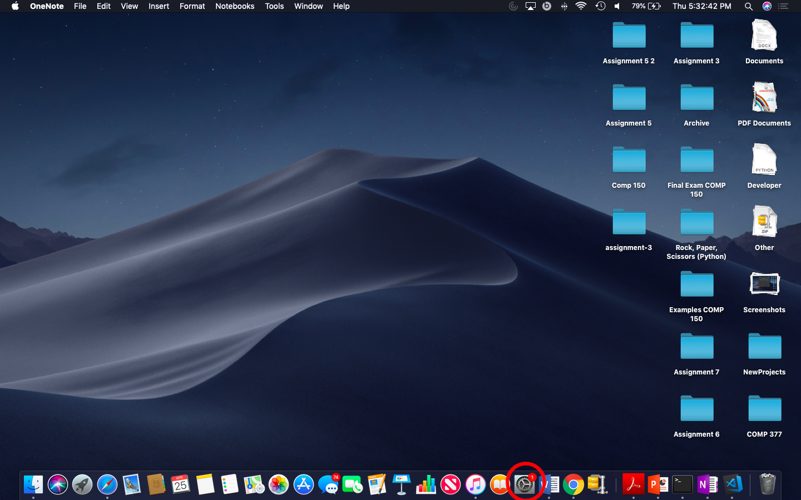

How to close open ports on Mac OS
Before we begin, we want to remind you to not get discouraged. This guide was specifically made to be accessible to a person of ANY experience level.
Step 1: Launch the “Systems Preferences” panel.

Step 2: Click the “Security & Privacy” icon followed by the “Firewall” tab.

Step 3: Click the lock to make changes. Enter credentials when prompted.
If your Mac is protected by an administrator password a prompt will appear to enter the administrator credentials

Step 4: Click the “Turn On Firewall” button.
Turning on the Mac firewall will ensure that all malcious ports are closed.

Step 5: Click the lock to save your changes and prevent them from being reset.
Your ports are now closed!